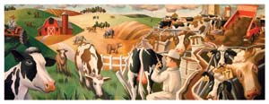
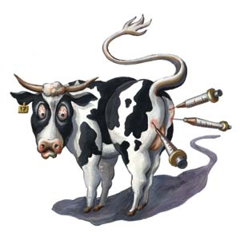
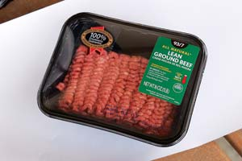
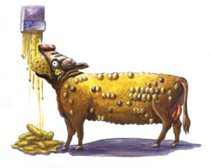
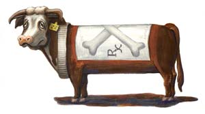

What You Need To Know About The Beef You Eat
Supermarket beef is an unnatural, industrial product. The good news is there are better and safer options.
By Jo Robinson
February/March 2008
You can’t see it. And you can’t always recognize it by reading the label. But the beef in your supermarket has gone industrial.
Before factory farming took hold in the 1960s, cattle were raised on family farms or ranches around the country. The process was elemental. Young calves were born in the spring and spent their first months suckling milk and grazing on grass. When they were weaned, they were turned out onto pastures. Some cattle were given a moderate amount of grain to enhance marbling (the fat interlaced in the muscle). The calves grew to maturity at a natural pace, reaching market weight at two to three years of age. After the animals were slaughtered, the carcasses were kept cool for a couple weeks to enhance flavor and tenderness, a traditional process called dry aging. The meat was then shipped in large cuts to meat markets. The local butcher divided it into individual cuts upon request and wrapped it in white paper and string.
This meat was free of antibiotics, added hormones, feed additives, flavor enhancers, age-delaying gases and salt-water solutions. Mad cow disease and the deadliest strain of E. coli - 0157:H7 - did not exist. People dined on rare steaks and steak tartare (raw ground beef) with little fear.
What’s in Your Beef?
Today’s industrialized process brings cattle to slaughter weight in just one or two years. But it reduces the nutritional value of the meat, stresses the animals, increases the risk of bacterial contamination, pollutes the environment and exposes consumers to a long list of unwanted chemicals.
The beef contains traces of hormones, antibiotics and other chemicals that were never produced by any cow. That hamburger looks fresh, but it may be two weeks old and injected with gases to keep it cherry red. Take a closer look at that “guaranteed tender and juicy” filet of beef. The juiciness may have been “enhanced” with a concoction of water, salt, preservatives and other additives.
More ominous, the beef also may be infected with food-borne bacteria, including E. coli 0157:H7. Some experts believe this toxic E. coli evolved in cattle that were fed high-grain diets. Every year, hundreds of thousands of pounds of beef products are recalled. One of the largest recalls to date took place in October 2007 when Topps Meat company recalled 21.7 million pounds of hamburger because of potential E. coli contamination. The massive recall actually put the company out of business.
And now there’s mad cow disease, a mysterious disease that is not destroyed by cooking and has been fatal. You could ingest “prions” (abnormal proteins) by eating even a well-done rib roast. These prions infiltrate your brain, perforate it with holes, and cause death in a few years’ time.
The artificial manipulation of beef begins prior to conception. Many cows are treated with synthetic hormones, such as “melengestrol acetate,” that regulate the timing of conception, allowing all the calves to be born within days of each other - a “more efficient” process. In many ranches, herd bulls have been replaced by artificial insemination, which is a fast (read: more efficient) way to improve herd genetics. The goal is consistent size, tenderness and marbling. But industry insiders predict that many ranchers will be using cloned cattle in five or 10 years. The mass-produced calves will be carbon copies of each other. The Food and Drug Administration (FDA) granted preliminary approval of cloning in December 2006, declaring that the meat is indistinguishable from normal meat, and is as safe for human consumption. In similar circumstances, no labeling has been required.
Goodbye Grass, Hello Feedlot
After the calves are born, they spend the first seven to nine months grazing on grass, the same way calves have been raised for generations. But when they reach 500 to 700 pounds, they are herded into trucks and shipped to auction barns where they’re sold to new owners and trucked to distant feedlots. The journey can take up to a week. Upon arrival at the feedlot, the stressed, thirsty and hungry calves are herded down chutes and subjected to a number of procedures, which can include dehorning, castration, branding and tagging. Then they are dewormed and vaccinated against various diseases. A common practice is to mix antibiotics with the feed, whether the now-stressed animals show signs of illness or not. Tetracycline, an antibiotic important for humans, is one of the most commonly used medications.
Lastly, the calves are implanted with pellets that contain growth-promoting steroid hormones that lose their effectiveness in a matter of months. Many animals are given new implants of higher potency to replace them. The aggressive use of hormone implants can add 110 pounds of lean meat or more to a calf. Every dollar invested in implants returns five to 10 dollars in added gain for each animal in the six to 12 months they spend in the feedlot.
Are Hormone Implants Safe?
Given the fact that nine out of 10 U.S. calves are treated with hormonal growth promoters, you can assume that most of the beef in your supermarket contains hormone residues. The FDA has approved five hormone implant growth promoters for cattle. Three of them - estradiol, progesterone and testosterone - are naturally occurring hormones that are identical to those found in humans. Zeranol and trenbolone acetate are synthetic hormones that mimic natural ones. In addition, melengestrol acetate is approved as a feed additive. Some implants contain a mix of these various substances.
Many consumers and advocacy groups are calling for a ban on these growth-promoting implants. They point to research showing that even trace amounts can promote tumor growth. At the Ohio State University, cancer researchers mixed human breast cancer cells with trace amounts of Zeranol, one of the five hormones used in U.S. cattle. Zeranol caused a significant spurt in tumor growth, even at levels 30 times lower than levels the FDA maintains are safe.
The European Commission Health and Consumer Protection Directorate-General has identified more than a dozen additional studies that raise concern about the safety of the implants, including the possibility they might cause birth defects and changes in sexual development in children. Weighing all the evidence, the European Union (EU) has banned the use of implants. They also refuse to import U.S. beef from animals treated with hormones. Although EU scientists concede there is no clear proof that the implants are harmful to humans, they assert there also is no proof that they are safe. What’s more, they say, Europeans have expressed a clear preference for hormone-free beef, even if no health risks are found. The World Trade Organization, at the urging of the U.S. government, now levies trade sanctions against the EU for closing their doors to U.S. beef.
Meanwhile, the FDA stands by its claim that beef from implanted cattle contains such small amounts of these drugs that they pose no threat to human health. In fact, the FDA is so confident in its ruling that it does not require hormone use to be listed on labels.
Grain and Antibiotics Go Hand in Hand
Hormones are just one way to speed the growth of young calves. Another strategy is to feed them an ultra high-grain diet, the standard fare in most feedlots. One reason calves are switched from grass to grain is that grain is a more concentrated form of energy. Calves fattened on grain reach maturity months ahead of grass-fattened calves. The less time cattle spend in feedlots, the greater the profit they return. Corn is the grain of choice because it’s especially high in energy.
Grain-feeding has another advantage: It keeps the assembly line moving steadily throughout the year. Grass becomes sparse during periods of drought and cold weather, which slows the growth of the calves. Grain is available year-round, allowing calves to gain as much weight in January as they do in June. It also keeps the meat cases stocked all year, a luxury we now take for granted.
But unnatural high-grain diets have a major drawback: They make cattle sick. To prevent or reduce the symptoms caused by grain-feeding, they are given a steady dose of antibiotics in their feed - adding yet another drug to the mix.
Why does grain-feeding cause health problems? Cattle, sheep and other grazing animals have a specialized stomach chamber called a “rumen.” The rumen is designed to convert fibrous plants such as grasses into a nutritious, easily digested meal. Replace the grass with grain and the rumen becomes too acidic. After several months, the condition can progress to “acute acidosis.” Cattle with acute acidosis develop growths and abscesses on their livers, stop eating, sicken and even die.
Retired animal science professor Jim Hayes, who holds a doctorate in reproductive physiology and animal science, and manages grass-based Sap Bush Hollow Farm in Warnerville, N.Y., puts it bluntly: “A high grain diet blows out their livers.” To keep the calves alive and gaining weight, they must be given a steady diet of antibiotics.
Even with these countermeasures, many calves develop “subacute acidosis,” a more aggressive form of acid indigestion. A calf with subacute acidosis will hang its head, drool, kick at its belly and eat dirt. Alarmingly, this is regarded as “natural” in the feedlot. According to an article in the trade magazine, Feedlot: “Every animal in the feedlot will experience subacute acidosis at least once during the feeding period. … This is an important natural function in adapting to high-grain finishing rations.” When calves are finished on high-grain diets, a certain amount of suffering is simply taken for granted.
Antibiotics as Growth Promoters
The calves are given antibiotics for yet another reason, one that has nothing to do with preventing or treating disease. Quite by accident, ranchers discovered that small doses of antibiotics called “subtherapeutic doses” allow animals to make more efficient use of their feed. (Antibiotics can boost metabolic rate, nutrient absorption and protein synthesis.) According to a 2001 report by the Union of Concerned Scientists, an estimated 70 percent of all the antibiotics used in the United States are now being given to healthy animals to improve their growth and performance.
Many scientific and medical groups - including the American Medical Association - are calling for a reduction in the use of antibiotics in animals. The practice is creating and spreading antibiotic-resistant strains of bacteria. When people or animals are treated with antibiotics, a small percentage of the bacteria survive because of genetic differences. Once all the normal bacteria are destroyed, the resistant bacteria are free to grow without competition. If you were to become infected with these bacteria, the drug used to treat the cattle would be ineffective. Alarmingly, half of the drugs being used to treat animals are identical or nearly identical to those used to treat humans.
A number of European countries have greatly reduced animal use of antibiotics. In Denmark, farmers voluntarily suspended use of antibiotic growth promoters by more than 60 percent without any significant economic impact.
Virtually all the beef in your supermarket comes from animals that were treated with growth-promoting antibiotics. You can’t tell by reading the label, however, because the FDA doesn’t require antibiotic use to be listed. It’s agribusiness as usual.
Chewing Gum, Spent Hens and Garbage
There seems to be no end to cost-cutting measures in the modern feedlot. To further lower the cost of feed, which accounts for 60 percent or more of the total cost of raising cattle, many cattle are fed “byproduct feedstuffs.” This can range from nutritious ingredients such as beet pulp and carrot tops, to junk: stale bread or candy and heat-treated garbage. As one feedlot operator told me, “Byproduct feedstuff is anything that is cheap, keeps the cattle growing and can be found close to the feedlot.”
In New York state, chewing gum has been used as a cheap feed supplement. The novel practice was recommended in a 1996 study in the Journal of Animal Science. The study concluded that stale chewing gum - still in its aluminum wrappers! - can “safely replace at least 30 percent of [cattle] growing or finishing diets without impairing feedlot performance or carcass quality.” In other parts of the country, cattle are being finished on stale pizza dough and candy bars, even heat-treated garbage. Feedlot operators drive to the manufacturing plants or municipal landfills and load up their trucks with this yummy fare, or they buy the used goods from middlemen called “jobbers” who offer a more varied buffet.
According to a May 21, 2007, article in The Wall Street Journal, reliance on junk food has shot up in recent years because the cost of feed corn has doubled due to the increased use of corn for ethanol production. According to the article, one farmer now feeds his cattle a ration that is 17 percent stale candy and 3 percent stale “party mix.” Another feeds a 100 percent byproduct diet, including French fries, tater tots and potato peels.
Some byproduct feedstuffs are high in protein and are considered a welcome addition to a high-grain diet. This list includes chicken feathers, salvaged pet food, ground-up laying hens (known as “spent hen meal”) and urea, a non-protein source of nitrogen synthesized from ammonia and carbon dioxide that is widely used as fertilizer. Urea can sicken cattle if not mixed carefully with feed.
The USDA does not require producers to tell you what the animals were fed.
An Industry Gone Mad
Beyond the obvious “yuck” factor, there is a compelling reason to restrict the use of byproduct feedstuffs in cattle production: It can spread mad cow disease, the most frightening disease in the history of the cattle industry. Until 1997, many of the cattle in the United States and Europe were fed blood, meat and bone meal from other cattle. Scraps of meat and bone left over from the slaughtering process were rendered (heat-treated), ground into meal and then fed back to the cattle. In essence, cattle were being fed to cattle, turning herbivores into carnivores - and cannibals.
No one realized that abnormal proteins called prions could survive the rendering process and transmit a deadly brain-wasting disease called bovine spongiform encephalopathy (BSE), commonly known as mad cow disease. Now research strongly suggests that people who ingest meat from BSE-infected cattle can be inflicted with a related and deadly brain disease, variant Creutzfeldt-Jakob disease (vCJD). As of July 2007, there have been three cases in the United States in people who are believed to have contracted the disease in other countries, and 201 cases worldwide, most of them (166) in the United Kingdom. Only 13 of the people who have contracted the disease since 1990 are still alive.
An Attempt to Clean Up the Feed Supply
Mad cow disease helped pull in the reins on an industry that was getting out of control. In 1997, the FDA ruled that the rendered products of cattle, sheep, deer and goats could no longer be fed to other ruminants. They also took steps to remove from the food supply the types of meat tissue most likely to carry BSE, including the small intestine, spinal cord, brain and other nervous tissue.
In 2004, the agency also banned the practice of feeding mammalian blood products to cattle, because new research showed that blood also can transmit BSE. Blood was a common ingredient in the milk “replacer” fed to dairy calves. Feeding poultry litter was banned as well. Poultry litter is a polite term for the blanket of manure, shavings, spilled feed, dead birds and feathers that accumulates on the floor of large poultry operations. It can be a hidden source of BSE-infected beef, because the FDA still allows meat and bone meal from cattle to be fed to chickens.
The meat industry now uses a mechanical process called Advanced Meat Recovery (AMR) to strip every scrap of meat from the bones. AMR increases the risk that spinal cord and other nervous tissue that can harbor BSE will enter the food supply. The Food Safety and Inspection Service has tightened the regulations about which parts of the animal can be stripped, but the process is not risk free.
Mad Cows and You
Most of the beef we now consume comes from cattle that were born after the United States Department of Agriculture (USDA) removed the most hazardous ingredients from cattle feed and banned sensitive beef tissue from the human food chain. Therefore, your risk of vCJD is lower than it was a couple years ago and much lower than it was 10 years ago.
For many people, however, these safeguards are not enough. Some maintain that the USDA is testing too few cattle to get an accurate measure. In other words, if they tested more animals, they’d find more disease. Another cause for concern is that BSE has been found in ordinary meat from sheep, not just the brain, intestines and spinal cord. Some fear that prions might be found in the steaks and roasts of cattle, as well.
Centralized beef processing magnifies whatever danger exists. If tissue from just one BSE-infected cow is ground into hamburger and mixed with meat from other cattle, tons of meat would be contaminated. This is what has happened many times already with E. coli 0157:H7 contamination. Unlike other food-borne diseases, cooking does not destroy the prions that cause mad cow disease.
Japanese health authorities are equally skeptical about the safety of U.S. beef. To protect the health of Japanese citizens, they test every animal for BSE, including the beef imported from the United States. Many people urge the United States to adopt the same rigorous standards.
So far, the USDA has refused to extend its testing program, claiming there is no scientific justification for such an extraordinary measure. It also asserts that wide-scale testing might give the false impression that the U.S. beef supply is unsafe. To maintain the aura of safety, the USDA prevented individual companies from testing their own cattle. (Read more about this in Mad Cow Disease: Should the USDA do More? December 2007/January 2008.) When Creekstone Farms, a Kansas cattle company, successfully sued the USDA in federal court to be allowed to begin testing for BSE in June 2007, the government agency filed an appeal, blocking the testing. In an unprecedented move, the USDA has even banned the marketing of BSE test kits, saying that the test procedures have not received their official approval. Since 2003, dozens of countries have issued total or partial bans of U.S. beef because of their concerns about mad cow disease. Some have since been lifted.
Less Nutritious Too
Mad cow disease, hormone implants and the excessive use of antibiotics may dominate the headlines, but there’s another problem caused by taking cattle off grass and fattening them on grain and byproducts: The meat loses nutritional value. Grass is a richer source of healthy fats and antioxidants than grain, and as a direct result, meat from grazing animals has more of these nutrients than meat from grain-fed cattle. In a study published in the journal Meat Science in 2005, a team of Argentinean researchers determined that grass-fed meat is higher in vitamin C, vitamin E and beta carotene.
Omega-3 fatty acids are another vital nutrient that’s diminished by a feedlot diet. Calves start losing their stores of omega-3s as soon as they start eating grain. By the time they’re ready for market, very little of this heart-healthy fat remains. Conjugated linoleic acid (CLA) is a fat that appears to be a potent cancer fighter. CLA is higher in grazing animals than in feedlot animals. The longer the animals graze, according to a study published by the Journal of Animal Science, the higher the CLA content of their meat.
While we know some of the nutritional effects of feeding grain to cattle, no one has studied how byproduct feedstuffs affect the meat. But it is reasonable to assume that a steak from a cow that got 30 percent of its calories from chewing gum will be lower in a number of vitamins and healthy fat. Garbage in; garbage out.
Make My Beef Truly Fresh and Truly Natural
The beef industry and government regulators go to great lengths to assure the public of the safety of the U.S. beef supply. We are told that the meat is inexpensive, safe and abundant. The National Cattlemen’s Beef Association, the public policy center for the beef industry, denies that grain-fed meat is less nutritious than grass-fed meat, and dismisses organic grass-fed beef as a mere “niche market.”
Meanwhile, dozens of countries around the world and millions of American consumers are increasingly skeptical of the U.S. beef industry and of the ability of the government to regulate it in the best interests of the consumer. In record numbers, people are buying beef from small-scale producers who raise cattle on pasture and choose not to supplement with grain, byproduct feed, hormones or antibiotics. These savvy consumers are placing their vote of confidence in beef made the old-fashioned way - cows grazing green grass and growing at their natural pace. Learning more about beef and its alternatives is the key to being able to choose healthy, natural beef.
So You Want Better Beef?
Finding an alternative to industrial beef takes effort. The cattle industry is highly consolidated, with the largest 25 feedlot companies now supplying 40 percent of all U.S. beef. The packing industry is even more concentrated. The top four beef packers (IBP/Tyson, Excel/Cargill, Swift/ConAgra and U.S. Premium/National Beef) harvest more than 80 percent of the meat. By contrast, in the 1960s the top four packers slaughtered less than 30 percent of all cattle. The trend is likely to continue, partly due to the fact that food giants, such as Wal-Mart and Safeway, cut costs by reducing their number of suppliers. Except for a small section of the meat case devoted to “natural meats,” all the remaining beef you see in the stores comes from animals that were fed high-grain diets and treated with hormones, antibiotics and other pharmaceuticals.
But you can find beef from cattle that were not fed filth, pumped up with hormones or treated with unnecessary antibiotics. And you can make sure it’s good and fresh. Better choices are beginning to pop up in natural and specialty grocery stores, on the Internet and in a growing number of traditional supermarkets. Here are a few pointers on how to find them:
- Opt for organic. The use of growth-promoting hormones and antibiotics is not allowed in certified organic beef production. Nor is feed made from animal byproducts, including meat, blood and bone meal from chickens, pigs and ruminants.
- Go for the grass. Choose beef from cattle that were 100 percent “grass-fed” or “grass-finished.” These animals are raised on their natural diet of grass from birth to market, and are not routinely given antibiotics and hormones. Look for a comprehensive grass-fed label from the American Grassfed Association in the coming months.
- Look at labels. Check for phrases like “Naturally Raised,” “No Hormones Added,” “Raised Without Antibiotics” and “Never Fed Animal Byproducts.” But don’t be afraid to do a little detective work; these kinds of labels rely primarily on the integrity of the producers, rather than independent certifying agencies.
- Comb your community. Don’t be afraid to ask your local producers how they raise their beef, and beware those who don’t want to answer you! You can find producers near you at farmers markets and on the Web. Try www.eatwild.com.
- Poke the package. Look for thin, flexible plastic wrap that clings to the meat. Modified atmospheric packaging, or MAP, requires meat to be wrapped in thick, gas-impervious plastic with enough head room to trap the gases that keep the meat looking fresh for an unnaturally long time.
- Deduce the date. Meat must have a “Sell by” or “Use by” date that states how long the meat is likely to remain safe to eat. But producers are not required to tell consumers when the meat was packed. Processors who use MAP avoid listing the packing date, as it would spoil the illusion of freshness. Look for meat that tells you exactly when the meat was packaged for sale.
- Buy beef and nothing but. It’s easy to avoid injected beef. The large print usually boasts “Extra Tender and Moist” or “Marinated for Flavor.” But the fine print of the label reveals injections of up to 30 percent of a mysterious water-and-chemical concoction.
Processed is the New “FRESH”
Ten years ago, virtually all the beef on the market met the United States Department of Agriculture’s (USDA) definition of “natural,” which means it has been minimally processed and contains no added ingredients, colors or preservatives. Now, beef is “flavor and moisture enhanced,” meaning it has been injected with a water-and-chemical solution - a marinade concocted by a chemist, not a cook - to make it look fresher longer, mask off-flavors or make it more tender and juicy.
In addition, a growing percentage of beef is treated with Modified Atmosphere Packaging, or MAP. Raw meat is placed in airtight packages and injected with gases to delay or disguise the normal aging process. The meat industry hopes that MAP will save up to a billion dollars a year by keeping the meat in the display cases longer.
The irony is that pastured cattle have enough natural antioxidants in their diet to keep their meat truly fresh longer than feedlot beef. What the processing plants try to do with a mix of chemicals, Mother Nature does on her own. To read about injected and gas-packed meat in greater detail, see Shocking News About Meat (June/July 2007).
Jo Robinson is a passionate advocate of grass-fed meat. You can find pastured beef producers near you by searching her Web site.
Sources
- U.S. Food and Drug Administration Center for Veterinary Medicine
- Vet Q. 1999 Oct;21(4):154-8. Residues from anabolic preparations after good veterinary practice, Henricks D.M.; Gray S.L.; Owenby J.J.; Lackey B.R., Source: Apmis, Volume 109, Number 4, April 2001.
- USDA fact sheet on Mad Cow Disease
- University of Minnesota Extension
- D.J. Patterson and M.F. Smith, University of Missouri-Columbia. November 8, 2006. An integrated approach to development and application of precise methods of estrous cycle control for beef heifers and cows.
- Journal of Animal Science. 2002. 80:1746–1751
- www.popsci.com/popsci/science/64b99082cc73d010vgnvcm1000004eecbccdrcrd.html
- www.ag.ndsu.edu/pubs/ansci/beef/as1178w.htm
- www.ers.usda.gov/publications/sb974-3/sb974-3.pdf
- www.aginfolink.com/new_documents/FTR%20January%202007.pdf
- www.cattletoday.com/archive/2000/August/Cattle_Today104.shtml
- Mycattle.com AS-1154, September 1998, Dr. Charlie Stoltenow, Extension Veterinarian, Dr. Greg Lardy, Extension Beef Specialist.
- http://www.ag.ndsu.edu/pubs/ansci/beef/as1178w.htm
- The Food Revolution by John Robbins
- www.fas.usda.gov/itp/policy/hormone.html
- www.fsis.usda.gov/Fact_Sheets/Beef_from_Farm_to_Table/index.asp
- www.fsis.usda.gov/Fact_Sheets/Water_in_Meats/index.asp
- Annual Report and Accounts 2001, Institute of Grassland and Environmental Research, "Control of beef meat quality." Nigel Scollan.
- Wolf, B. W., L. L. Berger, et al. (1996). "Effects of feeding a return chewing gum/packaging material mixture on performance and carcass characteristics of feedlot cattle." Journal of Animal Science, 74(11): 2559-2565.
- USDA Fact Sheet, FSIS Further Strengthens Protection Against Bovine Spongiform Encephalopathy
- www.aphis.usda.gov/newsroom/hot_issues/bse/content/printable_version/BSE_Chronology_Canada_Final.pdf
- New York Times, January 1, 1989, “Beef Dispute: Stakes High in Trade War” by Milt Freudenheim.
- Environmental Health and Preventive Medicine, Vol. 10 (2005) no. 5, BSE Safety Standards: An Evaluation of Public Health Policies of Japan, Europe, and USA. Gino C. Matibag, Manabu Igarashi and Hiko Tamashiro.
- pubs.acs.org/cen/coverstory/8222/print/8222madcow.html
- Janofksy, Michael. “25 Million Pounds of Beef is Recalled” New York Times, August 22, 1997.
- Mellon, Margaret, Charles Benbrook, Karen Lutz Benbrook, “Hogging It: Estimates of Antimicrobial Abuse in Livestock.” Union of Concerned Scientists, January 2001.
- Liu, S. and Y. C. Lin (2004). "Transformation of MCF-10A human breast epithelial cells by zeranol and estradiol-17beta." Breast J 10(6): 514-521.
- Opinion of the Scientific Committee on Veterinary Measures Relating to Public Health on Review of previous SCVPH opinions of 30 April 1999 and 3 May 2000 on the potential risks to human health from hormone resides in bovine meat and meat products, April 2002.
- Beef Cattle Handbook, BCH-3500, by Rick Stock and Robert Britton, University of Nebraska
- Data presented by Professor Henrik Wegener of the Danish Veterinary Institute to the Western Pacific Chemotherapy and Infectious Diseases Congress on December 3, 2002.
- Lauren Letter, “With Corn Prices Rising, Pigs Switch to Fatty Snacks.” The Wall Street Journal, May 21, 2007.
- “Variant Creutzfeldt-Jakob Disease Current Data,” (July 2007). The National Creutzfeldt-Jakob Disease Surveillance Unit, Western General Hospital, Edinburgh, Scotland.
- Lancet Neurol. 2004 Jul;3(7):389. “Prion protein in muscle tissue of sheep.”
- Descalzo, A.M., et al. Meat Science 70 (2005) 35-44. “Influence of pasture or grain-based diets on antioxidant/oxidative balance of Argentine beef.”
- Duckett, S. K., D. G. Wagner, et al. (1993). "Effects of time on feed on beef nutrient composition." Journal of Animal Science 71(8): 2079-2088.
- Noci, F., F. J. Monahan, et al. (2005). "The fatty acid composition of muscle fat and subcutaneous adipose tissue of pasture-fed beef heifers: influence of the duration of grazing." Journal of Animal Science 83(5): 1167-1178.
- Rick Sallinger, “Beef Packaging Technique May Mislead Consumers.” Oct 12, 2006 8:00 pm US/Mountain.
- Illinois Farm Bureau data, 2005.
- Khan.Mafruza, WHAT'S THE BEEF? CONSOLIDATION AND MARKET MANIPULATION IN THE BEEF PACKING INDUSTRY, Corporate Research Project, March 2004.
- Trade partners notified U.S. beef safe to eat: Chicago Sun-Times, Mar 29, 2004 by IRA DREYFUSS.
- Time Magazine, “The Grass-Fed Revolution” Sunday, June 11, 2006 By Margot Roosevelt.
|
 KERI ROSEBRAUGH Today’s industrialized process reduces the nutritional value of the meat, stresses the animals, increases the risk of bacterial contamination, pollutes the environment and exposes consumers to a long list of unwanted chemicals. |
 KERI ROSEBRAUGH You can assume that most of the beef in your supermarket contains hormone residues. |
 KERI ROSEBRAUGH Finding alternatives to the beef in your supermarket can take a little extra work, but you’ll be rewarded with healthy, flavorful beef free of added hormones, antibiotics and other unwanted nasties. |
|
 MATTHEW T. STALLBAUMER Check ingredient labels to find out if meat has been unnaturally “enhanced.” |
 KERI ROSEBRAUGH When calves are finished on high-grain diets, a certain amount of suffering is simply taken for granted. |
 KERI ROSEBRAUGH An estimated 70 percent of all the antibiotics used in the United States are now being given to healthy animals to improve their growth and performance. |